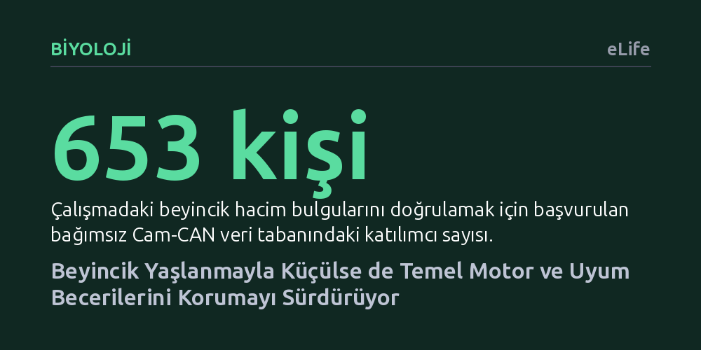

BIYOLOJI · eLife · 2026-09-08
Araştırmacılar, yaşlanmayla birlikte beyincikte görülen doku kaybının motor ve zihinsel becerileri zayıflatıp zayıflatmadığını inceledi. Bulgular, yapısal küçülmeye rağmen beyinciğin motor adaptasyon ve konuşma kontrolü gibi temel işlevlerini 80 yaş üstünde bile başarıyla koruduğunu gösterdi.
Yaşlılıktaki hareket ve denge aksaklıklarının sanılanın aksine doğrudan beyincik küçülmesinden kaynaklanmadığını, bu organın işlevsel bir rezervle çalışmayı sürdürdüğünü gösterir.

Yıllar ilerledikçe bedenimizde olduğu gibi beynimizde de gözle görülür yapısal değişiklikler meydana gelir. Özellikle hareketlerimizin kusursuz bir uyum içinde gerçekleşmesini, dengemizi ve motor zamanlamamızı yöneten beyincik, yaşlanmayla birlikte belirgin biçimde hacim kaybeder ve küçülür. Bilim dünyasında uzun yıllardır kabul gören yaygın görüş, ileri yaşlarda ortaya çıkan sakarlıkların, denge kayıplarının ve yavaşlayan hareketlerin doğrudan bu beyincik erimesinden kaynaklandığı yönündeydi.
Ancak bu yaygın kabul büyük bir yöntemsel varsayıma dayanıyordu. Önceki çalışmalarda incelenen yürüme, denge ya da genel motor öğrenme gibi karmaşık görevler, yalnızca beyinciğin değil, beynin birçok farklı bölgesinin ve kas-iskelet sisteminin ortak çalışmasını gerektiriyordu. Dolayısıyla genel hareket kabiliyetindeki zayıflamanın ne kadarının doğrudan beyincikten kaynaklandığı net olarak ayrıştırılamıyordu. Bu araştırma, tam olarak bu düğümü çözmek ve beyinciğin kendine has işlevlerini diğer etkenlerden izole ederek incelemek amacıyla yola çıktı.
Araştırmacılar bu soruyu yanıtlamak için genç yetişkinler, yaşlılar ve literatürde genellikle ihmal edilen 80 yaş üstü bireylerden oluşan üç farklı yaş grubunu bir araya getirdi. Katılımcılara yalnızca beyinciğin doğrudan sorumlu olduğu bilinen özel bir dizi görev uygulandı. Bunların başında, katılımcıların hedefe uzanırken görsel geri bildirimin aniden saptırıldığı ve beynin bu sapmayı farkında olmadan düzelttiği örtük motor adaptasyon testi geliyordu.
Bir diğer deneyde ise konuşma adaptasyonu ölçüldü. Katılımcılar kulaklık takarak 'bed' kelimesini telaffuz ederken, sistem sesin ilk frekansını gerçek zamanlı olarak değiştirip kulaklığa 'bid' gibi yansıttı. Sağlıklı bir beyincik, duyduğu bu frekans kaymasını düzeltmek için konuşma üretimini anında telafi eder. Ayrıca zihinsel döndürme testleriyle beyinciğin bilişsel boyutu ölçüldü ve tüm bu davranışsal sonuçlar, katılımcıların manyetik rezonans görüntüleme (MRG) ile elde edilen beyincik gri ve ak madde hacimleriyle eşleştirildi.
Elde edilen bulgular, kökleşmiş varsayımları sarsacak niteliktedir. MRG taramaları, yaşlı ve özellikle 80 yaş üstü bireylerin beyinciklerinde gençlere kıyasla belirgin bir doku kaybı olduğunu açıkça gösterdi. Örneğin beyincik gri maddesinin kafa içi hacme oranı gençlerde yüzde 6,03 iken, en yaşlı grupta yüzde 5,49'a kadar gerilemişti. Genel reaksiyon süreleri ve genel hareket kararlılığı gibi geniş kapsamlı duyusal-motor ölçümlerde de yaşla birlikte bariz bir düşüş gözlendi.
Buna karşın, doğrudan beyinciğe özgü ölçümlerde tablo tamamen farklıydı. Uzanma sırasındaki örtük adaptasyon ve konuşmadaki ses sapmasını telafi etme yeteneği, 80 yaşın üzerindeki bireylerde dahi gençlerle neredeyse aynı seviyede korunmuştu. Yaşlı katılımcılar harflerin yönünü zihinde döndürme testinde de yüzde 93'ün üzerinde yüksek bir doğruluk sergiledi. Beyinciğe ait işlevler arasında yalnızca göz hareketlerinin koordinasyonu ve zihinsel döndürme hızında hafif bir yavaşlama tespit edildi; diğer tüm motor uyum süreçlerinin sapasağlam kaldığı kanıtlandı.
Bu sonuçlar, yaşlanmayla birlikte görülen hareket ve denge bozukluklarının birincil sorumlusunun beyincikteki yapısal erime olmadığını ortaya koyuyor. Beyincik nöron devreleri, doku kaybına uğrasa bile sinaptik esneklik ve içsel telafi mekanizmaları sayesinde işlevselliğini sürdürebilen güçlü bir 'fonksiyonel rezerv' barındırıyor. Hatta beyinciğin gri madde kaybının, beynin ön ve şakak bölgelerine kıyasla oransal olarak daha yavaş ilerlemesi, bu koruyucu kapasiteyi destekliyor.
Sonuç olarak, ileri yaşlarda karşılaşılan hareket aksaklıklarının kökenini tek bir organın küçülmesinde aramak yerine; kas gücü kaybı, duyusal hassasiyetin azalması ve daha geniş kortikal ağlardaki iletişim kopuklukları gibi çok boyutlu faktörlerde aramak gerekiyor. Beyincik, yılların getirdiği yapısal yıpranmaya meydan okuyarak temel hareket ve konuşma uyumunu ömrün sonuna kadar başarıyla korumaya devam ediyor.